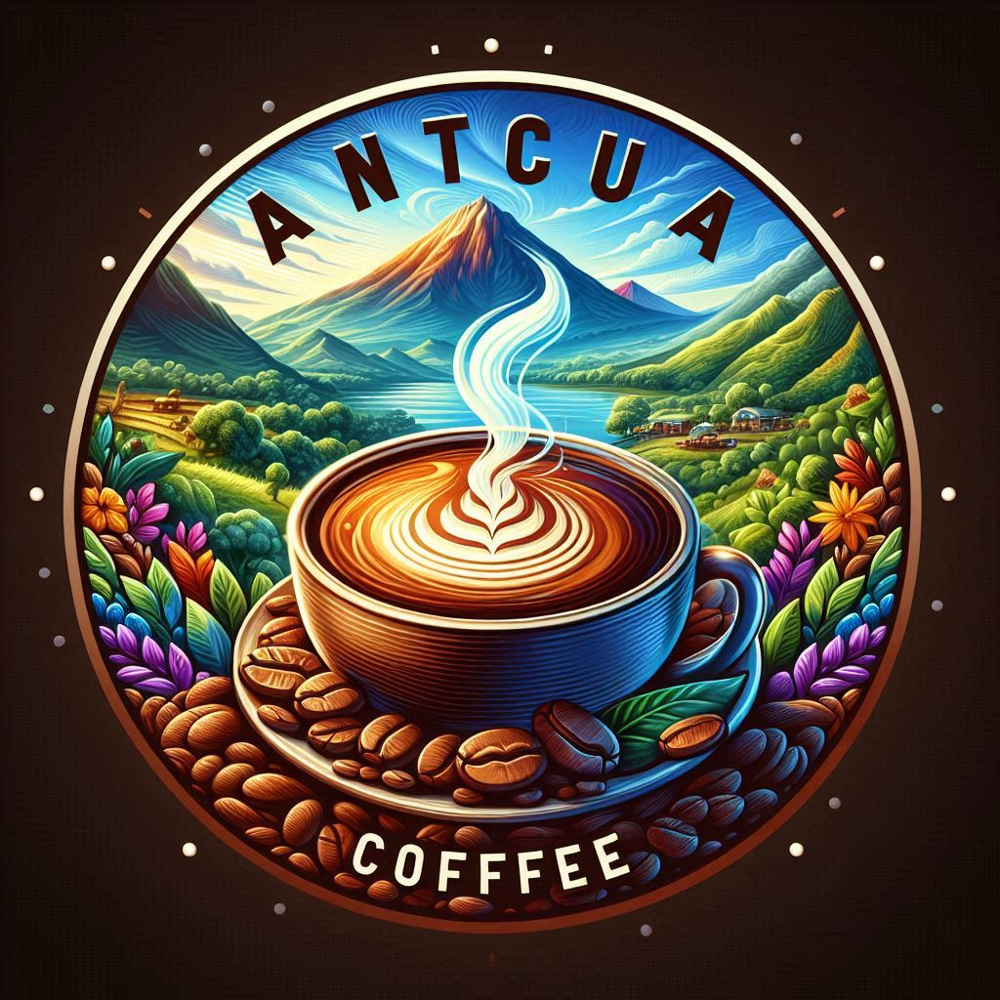

Our Coffee Beans

Ethiopian Yirgacheffe
Floral and citrus notes, light roast.
TK1500

Colombian Supremo
Rich and balanced, medium roast.
TK1250

Guatemalan Antigua
Chocolate and spice notes, dark roast.
TK1750
Brazilian Santos
Nutty and sweet, medium roast.
TK2000